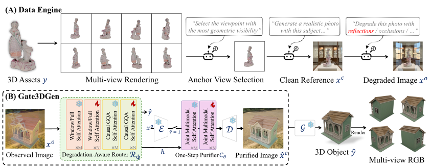

Single-image 3D generation has achieved high fidelity on curated benchmarks, yet degrades sharply on real-world images with uneven illumination, blur, and occlusions. Purifying such inputs requires deciding when to intervene and preserving the visual cues needed for 3D generation, while leaving clean inputs unchanged. We introduce Gate3DGen, a selective pre-processing model that gates image inputs to existing 3D generators without retraining them. A degradation-aware router bypasses inputs classified as clean and extracts features to guide purification of the remaining inputs. Conditioned on these features, a 3D-oriented one-step purifier purifies degraded inputs with spatial losses that encourage preservation of object identity, contours, and textural cues. To provide paired supervision, we construct a synthetic data engine that renders clean views of 3D assets and synthesises composite degradations. On the synthetic benchmark, the purifier improves image fidelity and downstream 3D geometry in only 2.3 s on average, reducing TRELLIS.2 mesh distance by 61.5% relative to degraded inputs. VLM evaluation and human preferences on real photographs further support identity preservation and degradation correction.
PREPRINT · 2026
Gate3DGen: A Pre-processing Model that Selectively Purifies Real-World Images for 3D Generation
1Tsinghua University · 2Huawei Inc. · 3Huazhong University of Science and Technology
TL;DR
Gate3DGen selectively purifies real-world images while bypassing inputs classified as clean, improving downstream 3D generation without retraining the 3D generator.

Abstract
Method

Results
Comparison
Citation
@misc{li2026gate3dgenpreprocessingmodelselectively,
title = {Gate3DGen: A Pre-processing Model that Selectively Purifies Real-World Images for 3D Generation},
author = {Xiaolin Li and Zihao Huang and Fanpeng Meng and Chen Yang and Guanjun Wu and Kai Zhang and Jiemin Fang and Qi Tian},
year = {2026},
eprint = {2610.31649},
archivePrefix = {arXiv},
primaryClass = {cs.CV},
url = {https://arxiv.org/abs/2610.31649}
}